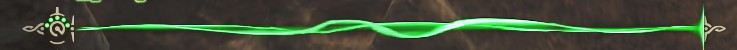
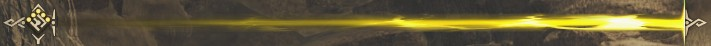
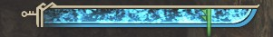
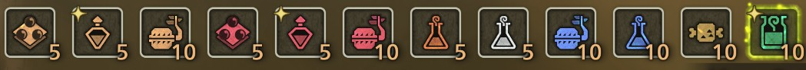

Starting your journey in Monster Hunter Wilds can feel overwhelming at first. With so many systems, weapons, and mechanics, it's easy to get lost. This guide will help you understand the basics so you can begin your adventure with confidence.
Understanding the Basics
- Health: Keep your health gauge up using potions made from Herbs to avoid fainting.

- Stamina:
Used for running, dodging, and attacks. It is important to manage your
stamina gauge effectively in combat to avoid exhaustion, which can leave you vulnerable. Replenished by eating.

- Sharpness: Your weapon loses effectiveness over time. Be sure
to keep an eye on your sharpness gauge for optimal damage and to avoid your attacks
bouncing off the target.

- Items: Always bring healing and support items. Running out
of items can be dangerous, so always keep a good supply.

Beginner Tips
Tip 1: Don’t rush. Learn the monster’s attack patterns to avoid taking unnecessary damage.
Tip 2: Always prepare before a hunt by bringing potions and food.
Tip 3: Try different weapons to find what feels comfortable. The right weapon can make a big difference in how you fight.
What to Do Next
Now that you understand a few of the basics, you can move on to learning more about weapons, monsters, and advanced hunting strategies. Check out the Weapons Guide and Hunter Tips pages to continue improving your skills.